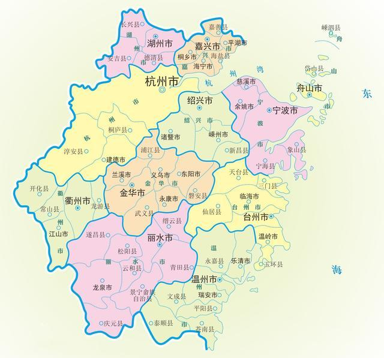

我的家乡
我的家乡是宁波，这是一个充满独特魅力的城市。它位于中国东部的浙江省，是一个拥有丰富历史和文化的城市。宁波是一个重要的港口城市，也是中国重要的贸易、制造业和金融中心之一。 宁波有着悠久的历史，早在七千年前，这里的河姆渡人就开始创造自己的文明。自此之后，宁波的历朝历代都留下了丰富的文化遗产。
这些遗产包括古老的寺庙、宏伟的古建筑以及精美的工艺品。 宁波的美食也是一大亮点，这里的海鲜美食是绝对不能错过的。由于宁波靠海，所以这里的海鲜种类丰富，新鲜美味。此外，宁波的年糕、汤圆等传统小吃也是非常有名的。 除了美食和文化，宁波还有美丽的风景。
镇海楼、天一阁、四明山等都是值得一游的景点。这些地方既有古老的历史，又有美丽的风景，让人流连忘返。 总的来说，宁波是一个充满魅力的城市。无论你是对历史、文化还是美食感兴趣，这里都能满足你的需求。我为能在这里成长感到自豪，也欢迎更多的人来我的家乡参观、学习。
版权所有©️plafle